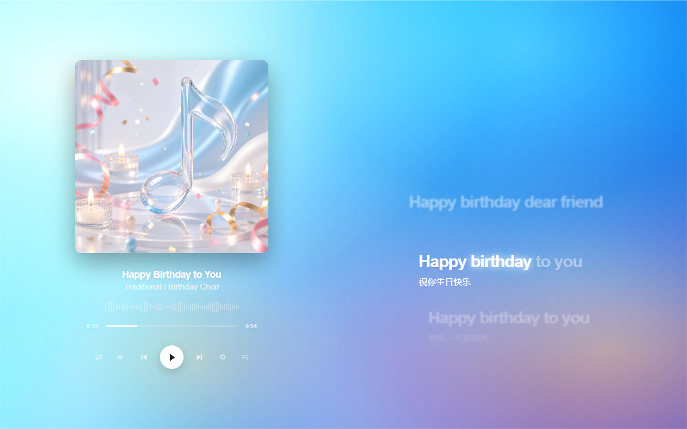
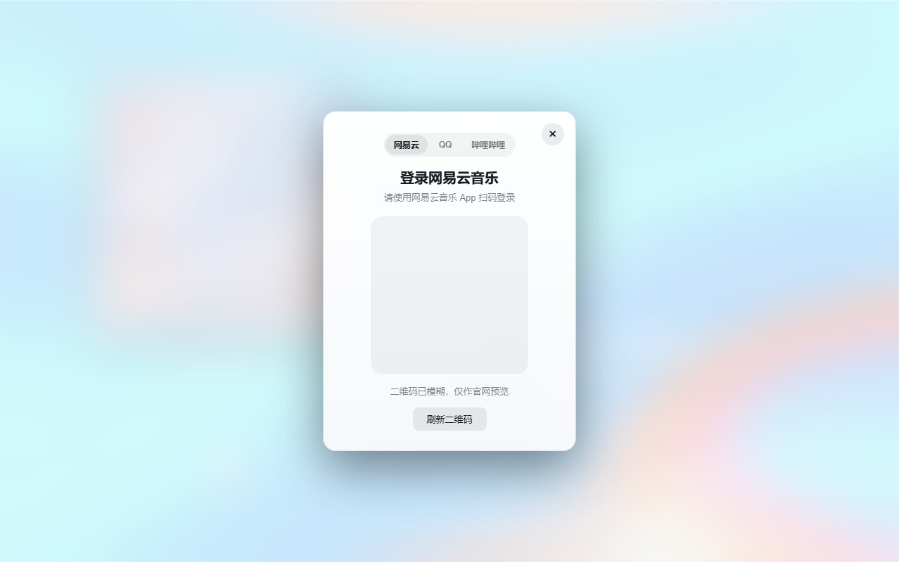
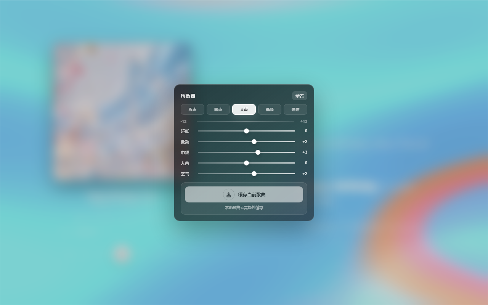

网易云音乐
扫码登录、搜索、歌词、播放 URL 预热和离线缓存。
Windows 桌面歌词播放器
把歌词、封面取色、音源搜索和离线缓存放进一个干净的桌面播放器里。它不抢戏，只让正在播放的歌更有存在感。



多来源，不混乱
网易云和 QQ 音乐保留平台切换搜索，B 站则直接通过 BV 号或链接导入。结果不混排，添加前能看清来源，播放失败也会给出明确原因。
扫码登录、搜索、歌词、播放 URL 预热和离线缓存。
支持会员账号播放链路，逐字歌词、翻译和缓存一起优化。
从视频导入音频、字幕、封面，也可使用视频背景。
像播放器，也像舞台
从当前封面中提取更鲜明的颜色，压低脏黄、土灰和低饱和色的大面积占比。
每首歌独立记住播放位置，切歌时避免进度乱跳，也减少重复等待。
提供原声、暖声、人声、低频、通透等预设，细调时仍保持克制的玻璃质感。
缓存歌曲时同步保存音频、歌词、封面等资源；删除歌曲时一并清理缓存。
真实预览
无内置版权资源
官网展示和无内置安装包不包含内置音乐、商业音频或专辑封面。用户自己的登录 Cookie、缓存媒体和导入文件留在本机，不会打进公开源码。
官网和公开安装包不携带商业音频。
平台 Cookie 只用于本地请求恢复。
删除歌曲时同步移除本地缓存。
下载最新版本
当前页面只在本地测试。正式发布前，可以继续替换文案、截图或下载链接。